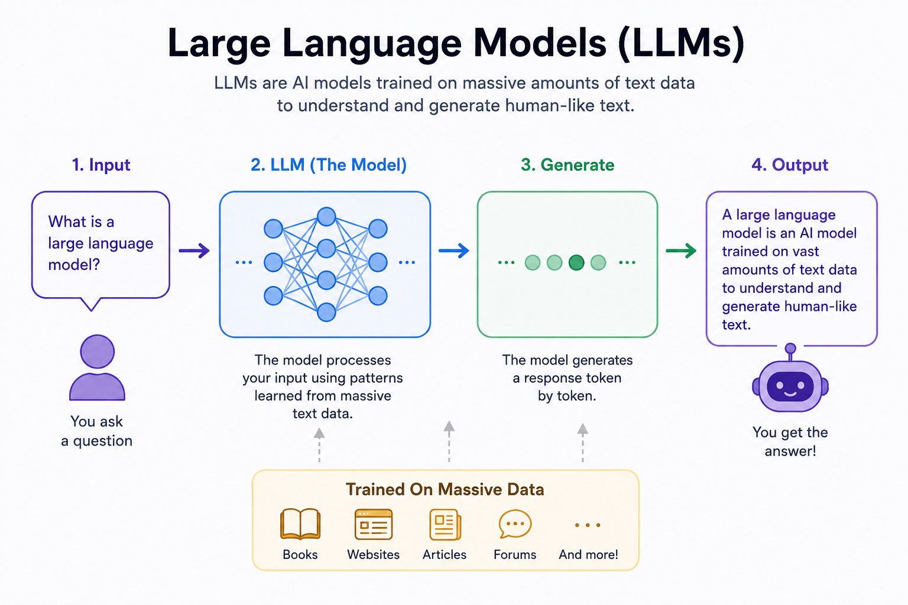
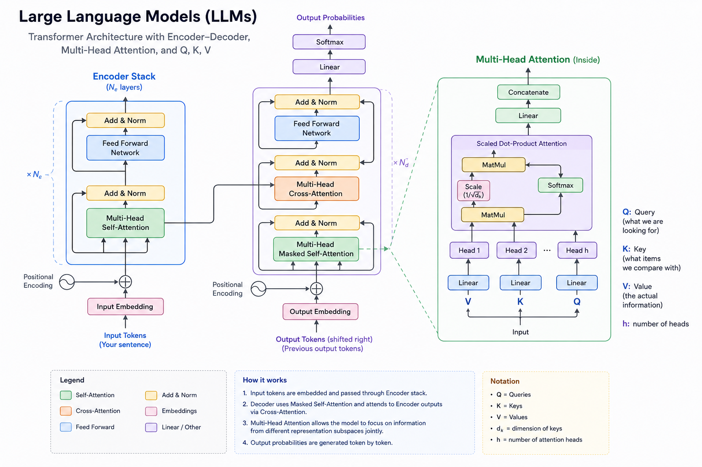

Multi-Head
Attention
The core innovation of the Transformer. Multi-Head Attention lets every token ask "which other tokens are relevant to me?" — and get a precise, learned answer. This book builds it from first principles: from word embeddings through Q, K, V projections to the full multi-head mechanism.
What Is a Large Language Model?
The big picture before diving into attention

A Large Language Model (LLM) is an AI model trained on vast amounts of text data — books, websites, articles, forums — to understand and generate human-like text. When you ask a question, the model processes your input using patterns learned during training and generates a response one token at a time.
The key architectural innovation enabling LLMs is the Transformer, and the key innovation inside the Transformer is Multi-Head Attention. Without attention, the model would treat every word equally — it would have no way to know that in "The cat sat on the mat," the word "sat" relates closely to "cat."
Why Do We Need Attention?
The problem that attention solves — connecting tokens that are far apart
Before attention, sequence models (like RNNs and LSTMs) processed text left-to-right, one token at a time. By the time the model reached token 100, it had largely forgotten token 1. Long-range dependencies — like a pronoun referring to a noun 50 words earlier — were very hard to learn.
Attention solves this by allowing every token to directly connect to every other token in a single operation, regardless of distance. The attention weight between any two tokens tells the model: "how much should token A pay attention to token B when producing its output?"
Instead of processing tokens sequentially, attention asks: "For each token, which other tokens in the sequence are most relevant right now?" The answer is computed as a weighted sum — tokens that are more relevant contribute more to the output.
Overall Flow
From input embeddings to the Transformer output — the full pipeline
From Words to Embeddings
How tokens become dense vectors before attention begins
Before attention can work, each word (token) must be converted into a vector of numbers — an embedding. This vector captures something about the word's meaning in a high-dimensional space. Similar words have similar embeddings.
For the sentence "The cat sat on the mat", each word is first converted into an embedding:
| Word | Embedding (simplified 4-dim) | Meaning encoded |
|---|---|---|
| The | [0.2, 0.5, 0.1, 0.3] | determiner, low content |
| cat | [0.8, 0.4, 0.7, 0.2] | animal, noun, subject |
| sat | [0.1, 0.6, 0.9, 0.5] | verb, past tense, action |
| on | [0.3, 0.2, 0.1, 0.8] | preposition, location |
| mat | [0.7, 0.3, 0.6, 0.1] | object, noun, surface |
These embeddings are not directly used for attention. Instead, three learned weight matrices transform them into Q, K, and V projections — each emphasising a different aspect of the embedding. This is why the model can learn different types of relationships from the same input.
Q, K, V — Three Projections of the Same Input
How the embedding is transformed into Query, Key, and Value vectors
The Library Analogy
An intuitive way to understand Q, K, V
Imagine walking into a library and asking: "I want books about artificial intelligence." Your question is the Query. Each book in the library has a catalog entry listing its keywords — those keywords are the Keys. The actual content inside each book is the Value. You compare your Query against all the Keys, find the best matches, and then read their Values.
The Meaning of Q, K, and V
What each projection represents for a concrete token
QQuery — "What am I looking for?"
Each token generates a Query vector asking: "what information do I need from the other tokens to understand myself in context?"
For the word "sat": the Query might ask "who performed this action?" — pointing toward the subject of the sentence.
KKey — "What do I contain?"
Each token generates a Key vector advertising: "what kind of information do I hold?"
For the word "cat": the Key might advertise "I am an animal, I am likely the subject of this sentence."
VValue — "What should be copied?"
The Value vector holds the actual information to be propagated forward once a token has been selected as relevant.
For the word "cat": the Value contains the full representation of "cat" — its meaning, role, and properties.
Computing Attention Scores
Dot product, scaling, and why we divide by √dₖ
Once we have Q and K, we measure how well each Query matches each Key using the dot product. A large dot product means the Query and Key are pointing in a similar direction — they are compatible.
However, for large embedding dimensions, dot products can become very large, pushing the softmax into regions where gradients are tiny (vanishing gradients). We fix this by dividing by √dₖ — the square root of the key dimension.
Softmax → Attention Weights → Output
Converting scores to probabilities and computing the context vector
After scaling, we apply Softmax to convert the raw scores into probabilities. Softmax ensures: (1) all weights are positive, (2) all weights for a given token sum to exactly 1.0. These are the attention weights.
The final output for each token is a weighted sum of Value vectors — each Value is scaled by how much this token attends to it.
Worked Mathematical Example
Computing attention step by step with concrete numbers
Let's work through the full calculation with 3 tokens and 2-dimensional Q, K, V vectors.
Visual Example — "sat" Attending to "cat"
Tracing attention scores through a real sentence
Let's trace what happens when we compute attention for the word "sat" in the sentence "The cat sat on the mat."
Why Multiple Heads?
Different heads specialise in different types of linguistic relationships
A single attention head can focus on one type of relationship at a time — like "who is the subject of this verb?" But language has many simultaneous relationships: grammatical agreement, co-reference, position, negation, semantic similarity, and more. Using multiple heads in parallel lets the model capture all of these simultaneously.
Each head learns completely different W_Q, W_K, W_V matrices, so it projects into a different subspace and discovers different patterns.
| Head | Example Focus | Sentence Evidence |
|---|---|---|
| Head 1 | Subject–verb agreement | "animal… was" (singular agreement) |
| Head 2 | Pronoun resolution | "it" → "animal" (not "street") |
| Head 3 | Position / local context | Adjacent word relationships |
| Head 4 | Negation propagation | "didn't" affects "cross" |
| Head 5 | Long-distance dependency | Clause-level connections |
| Head 6 | Semantic similarity | Synonyms, related concepts |
| Head 7 | Syntactic structure | Noun phrase boundaries |
| Head 8 | Sentence boundaries | Punctuation and structure |
Heads are not manually assigned specialisations — they emerge through training. The model discovers on its own that it's useful to have some heads track grammar, others track semantics, and others track long-range dependencies. This emergent specialisation is a key reason Transformers are so powerful.
Multi-Head Architecture
H heads in parallel, each with independent weight matrices
Project into H subspaces
The input X is projected into H independent (Q,K,V) triplets using H sets of learned weight matrices. Each head operates in a d_head = d_model/H dimensional subspace.
Run H attention computations in parallel
Each head independently computes Softmax(Q·Kᵀ/√d_head)·V. All H heads run simultaneously on GPU — no sequential dependency.
Concatenate head outputs
The H outputs, each of shape [seq, d_head], are concatenated along the last dimension to give [seq, H×d_head] = [seq, d_model].
Final linear projection
A single W_O matrix [d_model, d_model] mixes the concatenated head outputs, allowing the model to learn how to combine information from all heads.
Full Transformer Architecture
Where Multi-Head Attention sits within the complete Encoder-Decoder Transformer

The diagram shows how Multi-Head Attention sits inside the full Transformer. In the Encoder, every token attends to every other token (bidirectional). In the Decoder, the Masked Self-Attention prevents future tokens from being visible during training (causal masking). The Cross-Attention layer lets decoder tokens attend to encoder outputs — connecting the input and output sequences.
PyTorch Implementation
Multi-Head Attention from scratch — every line explained
import torch import torch.nn as nn import torch.nn.functional as F import math class MultiHeadAttention(nn.Module): """ Multi-Head Attention as described in 'Attention Is All You Need'. Splits d_model into n_heads parallel attention heads, each operating in a d_head = d_model // n_heads subspace. """ def __init__(self, d_model: int, n_heads: int): super().__init__() # d_model must be divisible by n_heads assert d_model % n_heads == 0 self.d_model = d_model # total embedding dimension (e.g. 512) self.n_heads = n_heads # number of parallel heads (e.g. 8) self.d_head = d_model // n_heads # dim per head (e.g. 64) # Fused QKV projection: projects d_model → 3*d_model in one matrix # More efficient than three separate projections self.W_qkv = nn.Linear(d_model, 3 * d_model, bias=False) # Output projection: mixes the concatenated head outputs self.W_o = nn.Linear(d_model, d_model, bias=False) def forward(self, x: torch.Tensor, # (batch, seq_len, d_model) mask: torch.Tensor = None # causal mask (batch, 1, seq, seq) ) -> torch.Tensor: B, T, D = x.shape # batch, sequence length, d_model # ── Step 1: Project to Q, K, V ──────────────────────────────── # x @ W_qkv: (B, T, D) → (B, T, 3D) qkv = self.W_qkv(x) # Split into Q, K, V — each shape (B, T, D) Q, K, V = qkv.chunk(3, dim=-1) # ── Step 2: Reshape for multi-head computation ──────────────── # (B, T, D) → (B, T, n_heads, d_head) → (B, n_heads, T, d_head) def split_heads(t): return t.view(B, T, self.n_heads, self.d_head)\ .transpose(1, 2) # (B, n_heads, T, d_head) Q, K, V = split_heads(Q), split_heads(K), split_heads(V) # ── Step 3: Scaled dot-product attention ────────────────────── # scores = Q @ K^T / sqrt(d_head) shape: (B, n_heads, T, T) scale = math.sqrt(self.d_head) scores = torch.matmul(Q, K.transpose(-2, -1)) / scale # ── Step 4: Apply causal mask (optional) ───────────────────── # Mask sets future positions to -inf so softmax → 0 if mask is not None: scores = scores.masked_fill(mask == 0, float('-inf')) # ── Step 5: Softmax → attention weights ────────────────────── # Each row sums to 1: weights[b,h,i,:] is a probability dist weights = F.softmax(scores, dim=-1) # (B, n_heads, T, T) # ── Step 6: Weighted sum of Values ──────────────────────────── # output = weights @ V shape: (B, n_heads, T, d_head) out = torch.matmul(weights, V) # ── Step 7: Merge heads and project ────────────────────────── # (B, n_heads, T, d_head) → (B, T, n_heads*d_head) = (B, T, D) out = out.transpose(1, 2).contiguous().view(B, T, D) # Final linear projection: mix head information return self.W_o(out) # (B, T, D) # ── Quick test ──────────────────────────────────────────────────── batch, seq_len, d_model, n_heads = 2, 6, 64, 8 mha = MultiHeadAttention(d_model, n_heads) x = torch.randn(batch, seq_len, d_model) # Causal mask: each token only attends to itself and previous tokens causal = torch.tril(torch.ones(seq_len, seq_len)).unsqueeze(0).unsqueeze(0) out = mha(x, mask=causal) print(ff"Input shape: {x.shape}") # [2, 6, 64] print(ff"Output shape: {out.shape}") # [2, 6, 64] — same shape! params = sum(p.numel() for p in mha.parameters()) print(ff"Parameters: {params:,}") # W_qkv + W_o = 3*D*D + D*D = 4*D²
Summary
The complete picture — from intuition to architecture
| Concept | What it is | Why it matters |
|---|---|---|
| Query (Q) | Projection of input asking "what do I need?" | Determines which other tokens this token attends to |
| Key (K) | Projection advertising "what do I contain?" | Matched against Queries to compute relevance scores |
| Value (V) | Projection holding actual information | Weighted-summed to produce the output |
| Dot product | Q·Kᵀ — similarity between Q and K | Large = high compatibility = attend more |
| Scaling ÷√dₖ | Prevents large dot products | Keeps softmax gradients from vanishing |
| Softmax | Converts scores to probabilities (sum=1) | Attention weights: how much to attend to each token |
| Weights × V | Weighted combination of Value vectors | Context-aware representation of each token |
| Multiple heads | H independent attention computations | Capture different relationship types simultaneously |
| Concatenate + W_O | Merge H head outputs | Combine all relationship types into one representation |
Multi-Head Attention lets each token ask "which other tokens are relevant to me?" using learned Query-Key matching, retrieves information from those tokens via Value weighting, and does this H times in parallel — each time looking for a different kind of relevance.